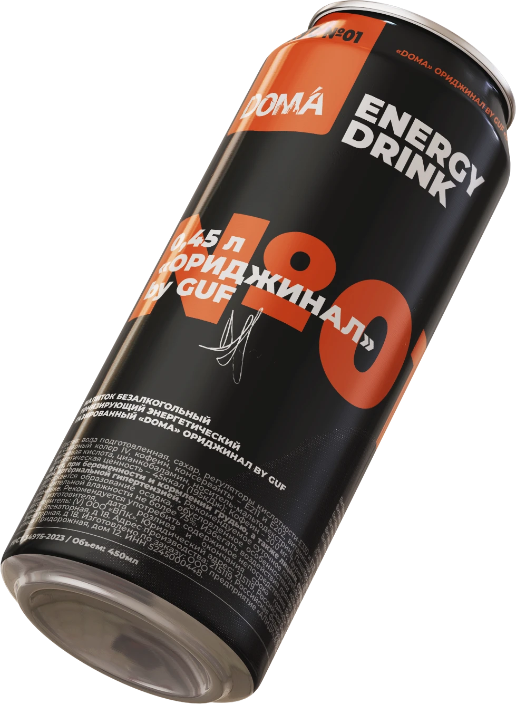

The first idea
What the viewer should understand while the scene does this.

DOMA by GUFЭнергетики × ЧипсыДроп №01–04
Энергетики, чипсы и скоро мохито — всё, что нужно для твоего ритма.
What the viewer should understand while the scene does this.
Tie each camera move to one message, never two.
End on the claim the section exists to prove.
Short intro to what people usually ask before they get in touch.
Answer written from the client's own materials.
Answer written from the client's own materials.
Answer written from the client's own materials.
Who to contact and what happens next.
hello@example.com